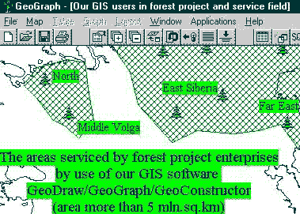
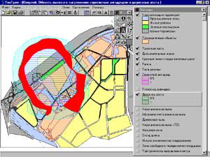

El Centro de Investigacion en SIG del Instituto de Geografia de la Academia rusa de Ciencias (GISRC- IGRAS), es uno de los principales disenadores de SIG's en Rusia. Durante 10 anos hemos disenado y distribuido software de SIG, tecnologias y proyectos para muchas regiones, creacion de mapas digitales, y asesoria a muchas organizaciones en la Federacion Rusa y en el extranjero.
El GISRC tiene mas de 3000 instalaciones de nuestro software de SIG original GeoDraw / GeoGraph / GeoConstructor en casi todas regiones de Rusia y en el extranjero, asi como en muchas ramas de la economia nacional como en geologia, ecologia, uso del suelo, sector forestal, construccion de caminos, arquitectura y planificacion regional, companias de servicios, distribuidores, educacion, geodesia y cartografia, defensa, elecciones, programacion y planeacion, etc. Toda nuestra actividad se consagra a la meta de crear la infraestructura de SIG's en Rusia, basado en un software amigable, profesional y de bajo costo. Satisface una gama amplia de usuarios de los distritos pequenos y de empresas privadas en proyectos de SIG grandes de varios millones de dolares. Tambien es compatible con los paquetes de software SIG mundiales mas populares. El Centro tiene una planta estable de especialistas altamente calificados en geografia, cartografia, programacion, matematicas y operadores.
En Rusia toda la planificacion y manejo forestal se basada en el Servicio Federal Forestal, varias empresas de programacion e inventariado (una empresa por cada region mayor, combinada con otras instituciones de la Federacion Rusa -aproximadamente 10), comites del Bosque (uno por cada sector de la Federacion Rusa - 89) y empresas de servicio forestal (aproximadamente 30 -50 por cada sector de la Federacion Rusa - en numero total de mas de 2000). Nuestro software de SIG, iniciado en 1993, se usa en varias empresas de proyectos forestales que cubren mas de 5 millones de km cuadrados - al norte de la parte europea, a mediados del rio de Volga, Siberia Oriental y el Este Lejano - ver mapa.
Estas empresas son los centros regionales basicos para la propagacion de bancos de datos de bosque en SIG, software y tecnologias en las regiones a al nivel de empresas de servicio de bosque. Las empresas de proyecto forestal crean el nuevo banco de datos de SIG de bosques para cada empresa de servicio cada 10 anos y ponen el banco de datos para la actualizacion de estos. El proceso de penetracion de los SIG's a las empresas de servicio forestal comenzo en 1995 y esta creciendo ahora. Nuestro software de SIG tambien se usa en escuelas forestales en San Peterburgo y en Ekaterinburgo, como la herramienta de educacion asi como en algunos Institutos de Investigacion Forestal.
Nosotros ayudamos organizar el proceso implementacion de SIG's y bancos de datos forestales para que la infraestructura de los SIG's regional se use tanto como sea posible y los resultados se representen como las capas y banco de datos de atributos con la misma infraestructura de los SIG's regionales (nuevas capas de bosques y mapas topograficos digitales, disponibles para proyectistas de caminos, companias infraestructura etc.). La actualizacion real de los datos de las empresas de servicio es similar a la actualizacion de la parte de infraestructura de los SIG's regionales por su similitud (ademas de las propias forestales). Esta es la manera de usar a los SIG's como la unica herramienta de la integracion de datos, permanentemente creado por organizaciones diferentes del mismo territorio.
El campo de los SIG's de ecologia es usado por el Centro Federal de Sitemas Geoecologicos del Ministerio Ruso de Ecologia, por comites ecologicos regionales y municipales, por las administraciones de reservas naturales y parques estatales, proyectos municipales y privados de empresas ecologicas, asi como por facultades relativas de universidades e institutos de investigacion. Todas estas organizaciones emplean nuestro software de SIG's, GeoDraw / GeoGraph / GeoConstructor, para la creacion de bancos de datos de SIG, para apoyo y para la planeacion medioambiental. El uso de datos creados por muchas otras organizaciones es el rasgo especial de actividad ecologica. Por consiguiente el uso de infraestructura de los SIG's regionales y municipales es muy importante en este campo. Un ejemplo de aplicaciones de los SIG's es como la "la cubierta en mosca" (ver en el cuadro del mapa la cubierta de zonas de polucion por componentes diferentes). Usted solo necesita seleccionar las capas para recubrir y realizar una consulta (en espacial consultas QBE, SQL) y se desplegaran los resultados como en zonas criticas inmediatamente y se informaran.

El sistema catastral es una direccion en vias de desarrollo en Rusia, debido a la aplicacion de nuevas politicas de tipo "propiedad privada", "tierra arrendada" y "propiedad de la tierra y propiedad", como uno de las partes mas importantes de transicion a la economia del mercado de 1992.
Nuestro software de los SIG's es empleado por muchas regiones y comites de tierra para la creacion de mapas catastrales y lo usan como subsistema de los SIG's del sistema de documentacion catastral. Los asuntos especiales son integrados con GIS/GPS y ayudan disenar sistemas catastrales como una parte de infraestructura de los SIG's regionales y municipales, asi como la interaccion entre los sistemas de informacion de comites de la tierra y otros servicios en el mismo territorio.
Nuestro software de los SIGS tambien es certificado por el centro del Estado Federal responsable para el uso de los mapas catastrales.
El Director del Centro de Investigacion de SIG IGRAS, el Dr. Nikolai Kazantsev es consejero oficial en SIG's del Presidente del Comite de la Tierra Estatal Ruso de la camara de diputados.
Se usan SIG's para la creacion y apoyo de infraestructura urbana en muchas ciudades grandes de Rusia (Moscu, San Petesburgo) y en los poblados pequenos (como de 10 - 30 mil habitantes). Los campos de aplicacion incluyen el apoyo en la multi - balanza estatal real y mapas digitales que se llevan a cabo con datos de estudio de campo creados durante los proyectos de construccion y aprovechamiento de suelos, datos catastrales etc., tecnologias de interacciones entre los diferentes sistemas de informacion de servicios de la ciudad (companias servicios, arquitectura, comite de la tierra, el comite de diferentes caminos etc.), para la direccion municipal integrada etc.
Nuestro software de SIG se usa en comites de la planificacion arquitectonica y urbanos, la informacion proviene de los administraciones de la ciudad, para los atlas electronicos de ciudades. Por ejemplo el CD de la ciudad de Krasnoyarsk con mas de un millon de habitantes, que incluye el SIG y mapa digital de cada edificio y el banco de datos de hipertexto y cuesta menos que $3.00 US.
Nuestro software de SIG se usa en mas de en 50 universidades de Rusia y en el extranjero. El Centro toma parte en el Ministerio Ruso de actividades de SIG de educacion para apoyar el sistema de informacion avanzada regional y los centros tecnologicos que pertenecen a universidades. Nosotros los apoyamos con software, capacitacion, buscando proyectos, tecnologias de diseno de SIG, etc. Nosotros tambien colaboramos estrechamente con la rama Rusa de UNIGIS (UNISIG) comenzada en 1999.
Aproximadamente 50 institutos de investigacion y academicos usan nuestro software de SIG para proyectos experimentales, casos de estudio, aplicaciones etc. en una amplia gama de sectores.
Dr. Sergio Ricardo Melesio-Nolasco
Coordinador Regional Chiapas-Tabasco
Padron Nacional Cafetalero 2001
Direccion General de Sistemas de informacion para la Operacion de
Apoyos
Directos
ASERCA / SAGARPA
e-mail: menr@rocketmail.com